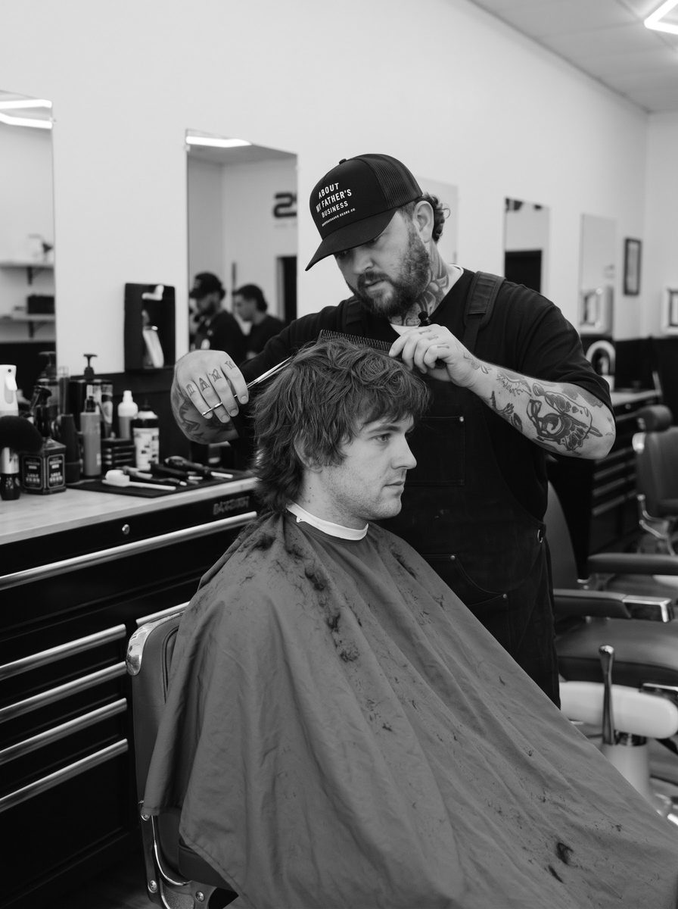
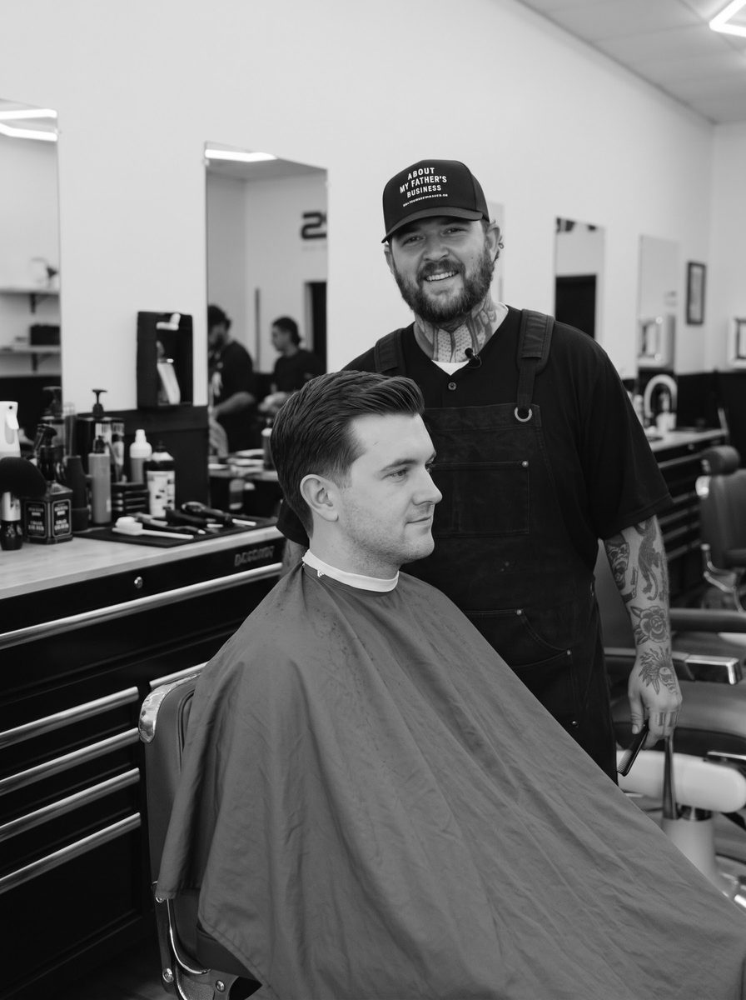

Men’s Traditional
This is the cut that grows out easy.
Shorter on the sides, longer on top, and a gradual blend that doesn’t go all the way to the skin. Clean lines, a tidy neckline, tapered or natural, your call. Want a side part or more length up top? Just say how much.
We can do it all with scissors or mix in clippers, whatever works for your hair. Bring a photo if you have one. We style it at the end so you can see how it sits, and you check the back before you leave.
A lot of guys start here and switch to a fade later. A lot of guys never switch. Most come back every 3 to 4 weeks.
The haircut
See the difference.
Drag the slider to compare grown-out hair with a classic traditional cut.


Questions
40 questions
No matching questions found. Try a different word or call us.
What’s a Men’s Traditional cut?
Clean lines, shorter sides, longer top. Gradual blend. Not a skin fade.
How’s it different from a skin fade?
We don’t take it all the way to the skin. More length stays on the sides.
How long does it take?
About 30 minutes.
Does it grow out okay?
Yeah. The gradual blend helps it look decent longer.
Can you do it all with scissors?
Yes. Full scissor or a mix of clippers and scissors.
How short are the sides?
Shorter than the top, but not bald. Controlled and even.
Is hot towel included?
Not on the cut alone. It comes with the beard services.
Good for a first visit?
Yeah. Solid if you’re not sure about a full skin fade.
Can I bring a photo?
Yes. Helps us see the length and shape you want.
What if I want the sides shorter next time?
Easy. A lot of guys start here and later switch to a fade.
Works with thick hair?
Yes. We shape it so it doesn’t look bulky.
What about curly hair?
We work with the curl so it still has shape.
How often should I come back?
Most guys every 3–4 weeks.
Can kids get this?
Kids 12 and under have their own service.
Do you style it at the end?
Yeah, so you can see how it sits.
Fine for work?
Yes. Clean and straightforward.
Need to wash my hair first?
No.
Can I add a beard trim?
Yes. Book Traditional & Beard.
What products do you use?
Whatever suits your hair for the finish.
How do I book it?
Pick Men’s Traditional on the booking page.
Will the sides look choppy if I wait?
Not really. It grows out more evenly than a tight fade.
Can you leave the top longer?
Yes. Just say how much length you want.
Works with glasses?
Yes. We can adjust around the frames.
Hair grows fast on the sides?
We can leave a little more so it doesn’t look uneven quick.
Tapered neckline?
Yes. Clean taper or more natural — your call.
Good if I’m thinning?
Yes. We can keep it shorter and cleaner.
Clippers or scissors?
Both, or scissors only if you prefer.
Can I get a side part?
Yes.
Will it look plain?
A clean traditional cut looks sharp without extras.
Want it shorter overall next time?
Just say how much.
Does it include the neck?
Yes. We clean the neckline.
Receding hairline?
We shape it so it looks balanced.
Low maintenance?
Pretty much. Doesn’t need a lot of product.
What should I tell you?
How short on the sides, how much on top, any style you like.
Can I switch from a fade later?
Yes. Anytime.
Takes longer than a buzz?
Yes, because of the shaping. Still about 30 minutes.
Texturize the top?
If you want.
Good for older guys?
Yes. A lot of guys prefer this over a tight fade.
Quick beard cleanup with it?
Better to book Traditional & Beard for the full beard work.
Running late?
Call or message. We’ll try to still get you in.